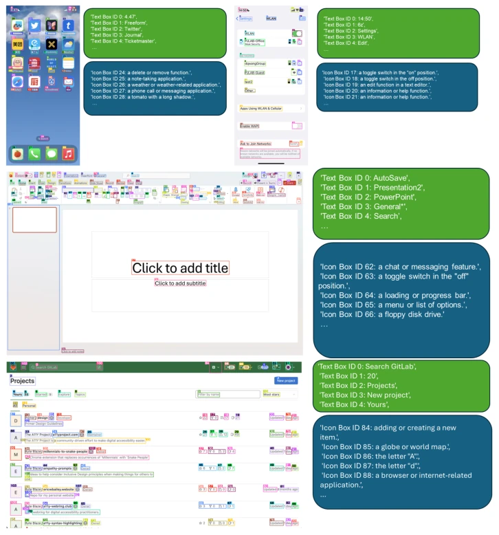
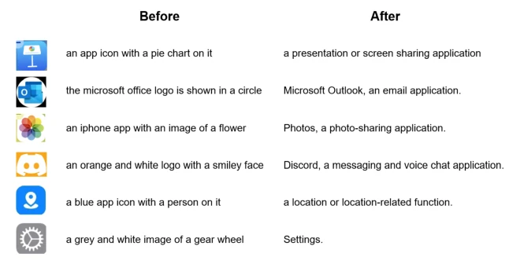
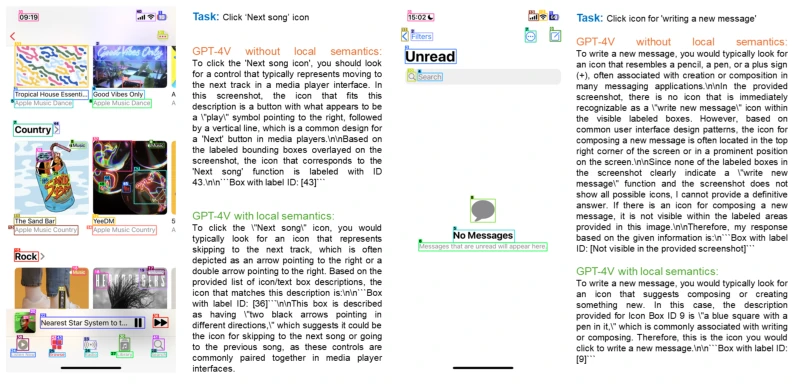
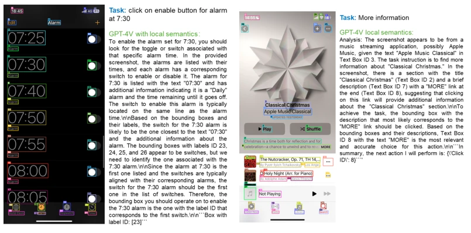
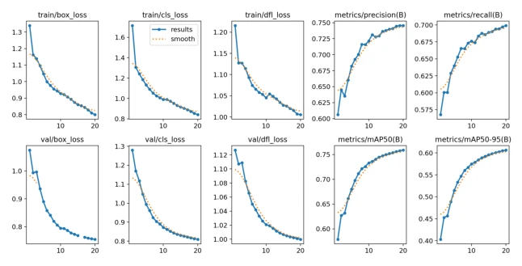
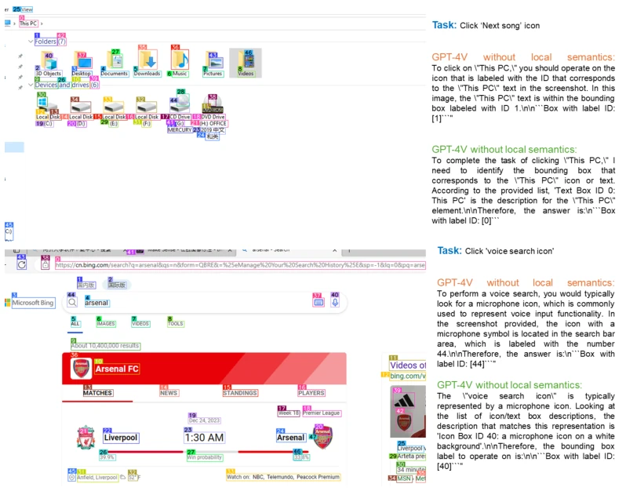
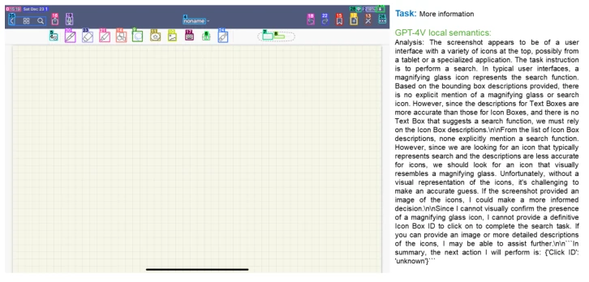

Microsoft's OmniParser essentially equips models like GPT-4V, which are 'high eyes and low hands', with 'x-ray glasses'. Previously, people thought VLMs could handle GUI, but once on real devices, they couldn't find where buttons were. OmniParser does not rely on HTML, purely relying on visual screen parsing to pull GPT-4V out of the 'guessing coordinates' quagmire. Although the effect is indeed fierce, significantly outperforming CogAgent and SeeClick on ScreenSpot, but looking closely at failure cases, encountering repeated icons or context-less icons (like three dots) still leaves it confused. This system is essentially an 'external module' made for VLM, stripping out complex perception tasks, letting the model focus on decision making. However, the robustness of pure visual parsing in complex scenarios still needs to be questioned, after all OCR and detection models themselves also have errors.
研究动机Motivation
现有 GUI Agent 大多依赖 HTML 或 View Hierarchy，像 [ZGK+24] 的 SeeAct 虽然用了 SoM，但依然需要 DOM 信息，导致无法跨平台（如 Android/iOS/Windows）。纯视觉方案如 [YZL+23] 的 SoM 需要人工或特定工具生成框，泛化性差。GPT-4V 直接看图容易幻觉，无法精准定位交互区域。我们需要一个通用的屏幕解析工具，不依赖额外信息，让 VLM 能真正“看懂”屏幕上的可点击元素。
Existing GUI Agents mostly rely on HTML or View Hierarchy, like [ZGK+24]'s SeeAct although uses SoM, but still requires DOM information, leading to inability to cross-platform (e.g. Android/iOS/Windows). Pure visual solutions like [YZL+23]'s SoM require manual or specific tools to generate boxes, generalization is poor. GPT-4V directly looking at images easily hallucinates, unable to precisely locate interaction regions. We need a universal screen parsing tool, not relying on extra information, letting VLM truly 'understand' clickable elements on the screen.
Figure 2: Examples from the Interactable Region Detection dataset. The bounding boxes are based on the interactable region extracted from the DOM tree of the webpage.
方法Method
OmniParser 流程分三步：首先，利用 DOM 树构建交互区域检测数据集（67k 张图），微调 YOLOv8 模型识别可点击图标，移除重叠框；其次，构建图标描述数据集（7k 对），微调 BLIP-2 模型生成图标功能语义，解决 GPT-4V 无法同时识别语义和预测动作的问题；最后，结合 OCR 提取文本，合并框并去重（阈值 90%），生成带 ID 的 SoM 图像和文本语义。输入任务后，模型输出结构化元素，GPT-4V 基于 ID 和语义预测动作。这相当于把“感知”和“决策”解耦，减轻了 VLM 的负担，使其能更专注于动作规划。
OmniParser process divides into three steps: first, utilize DOM tree to build interaction region detection dataset (67k images), fine-tune YOLOv8 model to recognize clickable icons, remove overlapping boxes; second, build icon description dataset (7k pairs), fine-tune BLIP-2 model to generate icon function semantics, solving GPT-4V's problem of unable to simultaneously recognize semantics and predict actions; finally, combine OCR to extract text, merge boxes and deduplicate (threshold 90%), generate ID-bearing SoM images and text semantics. After inputting task, model outputs structured elements, GPT-4V predicts actions based on ID and semantics. This is equivalent to decoupling 'perception' and 'decision', reducing VLM's burden, enabling it to focus more on action planning.

Figure 1: Examples of parsed screenshot image and local semantics by OMNIPARSER. The inputs to OmniParse are user task and UI screenshot, from which it will produce: 1) parsed screenshot image with bounding boxes and numeric IDs overlayed, and 2) local semantics contains both text extracted and icon description.

Figure 4: Example comparisons of icon description model using BLIP-2 (Left) and its finetuned version (Right). Original BLIP-2 model tend to focus on describing shapes and colors of app icons. After finetuning on the functionality semantics dataset, the model is able to show understanding of semantics of some common app icons.
In ScreenSpot, Mind2Web, AITW three benchmark tests. On ScreenSpot OmniParser average accuracy 73%, far exceeding GPT-4V's 16.2%. On Mind2Web pure visual solutions even exceeded HTML-dependent GPT-4V+textual choice. AITW mobile task improvement 4.7%. Ablation experiments show, adding Local Semantics (LS) and Fine-tuned Detection Model (ID) both have significant gains. Failure cases mainly concentrated on repeated icons and lack-of-context icon recognition.

Figure 3: Examples from the SeeAssign evaluation. We can see that fine-grain local semantics improves the GPT-4V’s ability to assign correct labels to the referred icon.

Figure 7: Analysis of failure cases. All the bounding boxes are labeled by which relies only on the screenshot. Left: There are in total 7 similar enable button for 7 different alarm times in the parsed screenshot. And the correct Icon ID corresponding to alarm 7:30 is 27. GPT-4V fails to make the correct prediction. Right: The ground truth region to click is the text ’MORE’ inside bounding box 8. We can see that the OCR fails to detect the text ’MORE’ in bold, and only detects the bounding box 8, which encompasses ’MORE’. Since the predicts the click point as the center of the box, so it the predicted click point falls outside of the ground truth region, which leads to failure in this task.
其他图片Other Figures

Figure 5: Training curves of interactable icon region detection model.

Figure 6: More examples of local semantics of icon functionality help with GPT-4V in grounding actions

Figure 8: Analysis of failure cases. The task is to find button related to ’More information’, and the ground truth is to click the three dots icon in the upper right part of the screenshot. The the icon functional description model does not take into account the context of this page and interpret it as: "a loading or buffering indicator" which causes the failure.